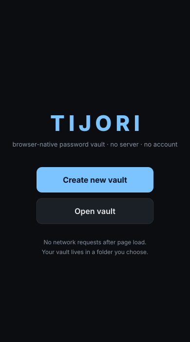
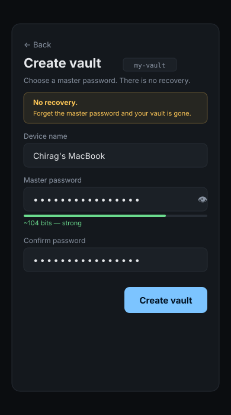
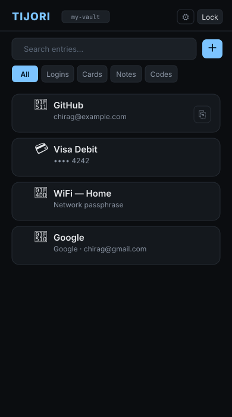
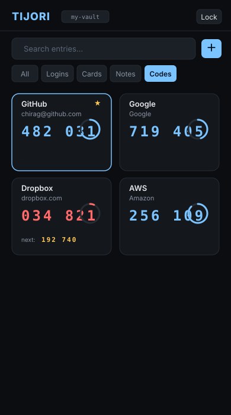
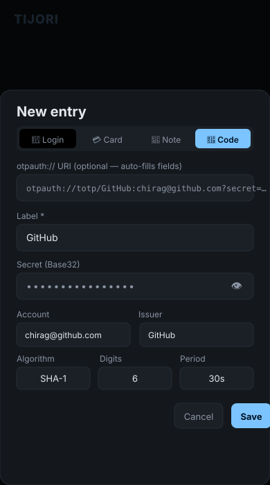
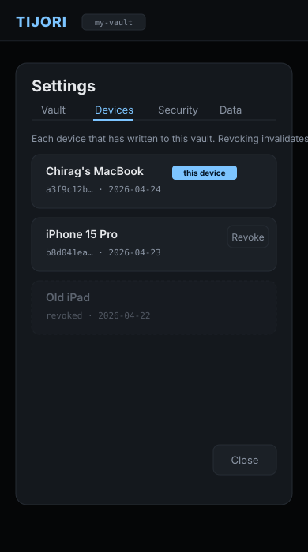
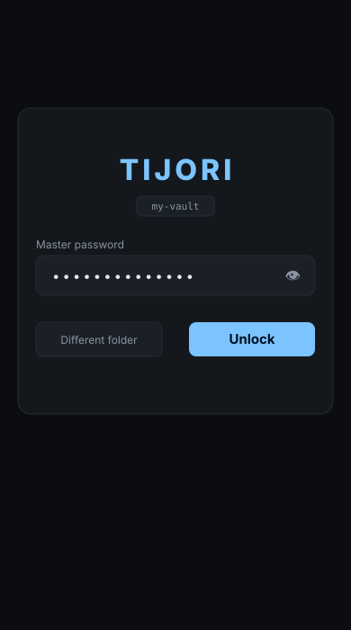

Tijori (तिजोरी, "strongbox") is a browser-native password vault. Unlike a hosted password manager, Tijori has no server, no account, and no company holding your data. Your vault is a folder of files on your disk. You pick the sync transport. Nothing is sent anywhere.
This page shows every screen of the app, explains how it's built, and is honest about the tradeoffs. Asking you to trust a browser app with your passwords is a big ask — here's everything you need to make that decision.
Pick whichever you trust most. They all do the same thing.
naklitechie.github.io/Tijori — loads once, makes zero network requests after that. No service worker yet; keep the tab open or bookmark it.
File → Save Page As → index.html. Open it from disk any time.
One file, no internet required, works on any device with Chrome or Edge.
github.com/NakliTechie/Tijori
— read every line, then serve with python3 -m http.server.
No build step. No dependencies to audit.
Every screen in order, mobile view.

Create new vault opens the OS folder picker — point at an empty folder, set a master password, and the vault is created there. Open vault points at an existing vault folder from another device, a cloud folder, or a backup.
On return visits, if your browser still holds permission to the folder, Tijori skips straight to the Unlock screen.

The device name labels this browser's event stream in the roster. The entropy meter gives live feedback — aim for at least 50 bits (four random words is fine).
The yellow box is not decoration. Tijori cannot reset your master password. It has never seen it. If you lose it, the vault contents are unrecoverable.

The All tab shows Logins, Cards, and Notes together. Switch to Codes for the TOTP grid. Search filters live as you type.
Click ⎘ on any Login or Card row to copy the password or card number directly — no need to open the entry. The clipboard auto-clears after the timeout you set in Settings.

Tap Codes to switch to this view. Each tile shows the label, current code, and a ring counting down to rotation.
When a code expires in the last ~5 seconds (shown in red), the next code appears below it for smooth handoff. Tap any tile to copy. The tile flashes green. Star a tile to pin it — pinned codes sort first.

The top field accepts an otpauth://totp/ URI — paste it and
Label, Account, Issuer, Algorithm, Digits, and Period fill in automatically.
Most 2FA setup pages offer a "can't scan?" link that reveals the URI.
The secret is AES-256-GCM encrypted in the event log, identical to passwords. Nothing about your TOTP configuration leaks to the file system in plaintext.
Bulk import: Settings → Data → Import → otpauth:// URIs — paste one URI per line to import many codes at once.

When a second browser opens the vault folder, Tijori detects it's a new device,
asks for the master password to verify, adds a device_registered
event, and starts its own event stream. No coordination needed.
Revoking a device emits a device_revoked event.
On the next merge, events from that device timestamped after the revocation
are skipped. Lost a device? Revoke it from any other synced device.

The derived key is held in memory only while unlocked. Idle timeout, the Lock button, or tab-hide lock wipes it from memory.
Wrong passwords are rejected by AES-GCM's authentication tag — there is no "close enough." Tijori doesn't phone home with failed attempts because it can't.
Different folder lets you point at another vault on disk without reloading — useful for separate personal and work vaults.
Every claim below is verifiable by reading index.html — one file, no build.
| Concern | Implementation |
|---|---|
| Key derivation | PBKDF2-SHA-256, 600,000 iterations. Web Crypto API only — no library. |
| Entry encryption | AES-256-GCM, random 12-byte nonce per event. Payload is JSON, encrypted to opaque base64. |
| Hash chain | SHA-256 of previous raw event-line string, embedded as prev_hash. Break any byte, break the chain. Verifiable in-app via Settings → Vault. |
| TOTP | RFC 6238 over WebCrypto HMAC-SHA-{1,256,512}. Base32 decoder inline (~25 lines). No library. |
| File I/O | File System Access API (showDirectoryPicker). Handle persisted in IndexedDB for reconnect. Chrome/Edge only — Firefox/Safari lack the API. |
| Network requests | Zero after page load. CSP has connect-src 'none'. Open DevTools and verify. |
| Dependencies | Zero. No CDN, no npm, no framework. |
| Build step | None. The source file is the app. |
Honest about what this model costs you.
.tijori file
in a cloud folder; it is AES-256-GCM encrypted with your master password.
Chrome or Edge only. The File System Access API (showDirectoryPicker) is not in Firefox or Safari yet. If those browsers gain support, Tijori will work there too — no code change needed.
Both passwords and 2FA codes share one master password and one device. This is a deliberate UX-vs-separation tradeoff. If you want strict isolation, run Tijori and Rotor against separate folders with separate master passwords.
Merge is per-field last-writer-wins, sorted by timestamp. Two devices editing the same field concurrently: the later timestamp wins. No diff UI — the result is deterministic and silent.
Revoking a device prevents its future events from being merged. It does not re-encrypt the vault. A revoked device that already has a copy can still decrypt with the master password. Full remediation: revocation + master password change.